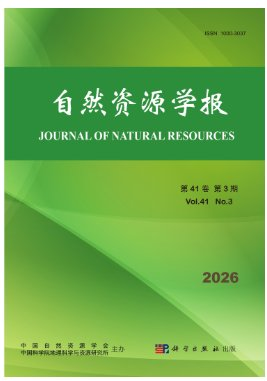
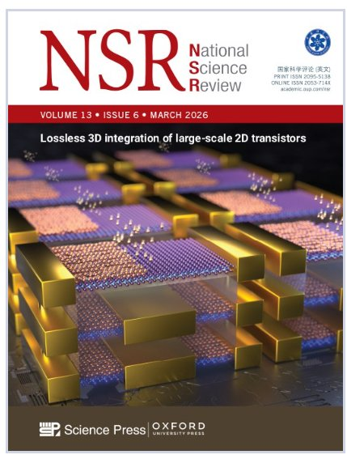
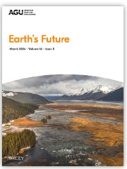

←
Hui Tang
EN
中
Publications
Peer-reviewed journal articles and books
14
Publications
4
First Author
1
Book
2026
Landscape
&
Urban
Planning
Inequality reduction of conservation responsibility: An unexpected outcome of achieving the 30×30 biodiversity target in China
Tang H.
, Hu T., Lin Y., Li X., Xu D., Chen Y., Xia P., Peng J.*
Landscape and Urban Planning
First Author
Under Review
📝
In
Preparation
China's grain production increase has benefited half of global terrestrial vertebrates
Tang H.
, Hubacek K., Hu T., Xu D., Liu Y., Peng J.*
Ready for submission
First Author
In Prep
2025
TRENDS
in
Ecology &
Evolution
A landscape ecological approach to spatial conservation planning – ecological security pattern
Peng J.*, Xu D.,
Tang H.
, Jiang H., Dong J., Wu J.
Trends in Ecology & Evolution, 40(10), 1010–1022
Read
Progress in
Physical
Geography
Considering dynamic landscape ecological risk to identify ecological security patterns in urban agglomeration
Li X.,
Tang H.
, Peng J.*
Progress in Physical Geography, 50(1), 37–53
Read
Land
Degradation
&
Development
Optimization of ecological security pattern in a mining city: Multi-scenario comparison of ecological restoration
Zhong D., Peng J., Xu D.,
Tang H.
, Jiang H., Hu T., Yang Y., Wu J.
Land Degradation & Development, 37(2), 689–703
Read
2024
Global
Ecology &
Conservation
Trade-off between comprehensive and specific ecosystem characteristics conservation in ecological security pattern construction
Tang H.
, Peng J.*, Jiang H., Lin Y., Xu D.
Global Ecology and Conservation, 49, e02776
First Author
Read

Ecological restoration reference of terrestrial space: Theoretical recognition, identification framework and key issues
Tang H.
, Peng J.*, Xu D., Wu J.
Journal of Natural Resources (in Chinese), 39(12), 2768–2782
First Author
Read

Ten key issues for ecological restoration of territorial space
Peng J.*, Xu D., Xu Z.,
Tang H.
, Jiang H., Dong J., Liu Y.
National Science Review, doi:10.1093/nsr/nwae176
Read
Global
Ecology &
Conservation
Constructing ecological security patterns with differentiated management intensity based on multifunctional landscape identification and multi-criteria decision-making
Jiang H., Peng J.*, Xu D.,
Tang H.
Global Ecology and Conservation, 50, e02862
Read

Unveiling decoupled social-ecological network of great lake basin: An ecosystem services approach
Peng J.*, Zhang Z., Lin Y.,
Tang H.
, Xu Z., Zheng H.
Earth's Future, 12(11), E2024EF004994
Read
Geography
&
Sustainability
Bridging climate refuges for climate change adaptation: A spatio-temporal connectivity network approach
Xu D., Peng J.*, Liu M., Jiang H.,
Tang H.
, Dong J., Meersmans J.
Geography and Sustainability, 6(2), 100235
Read
Landscape
Ecology
Constructing ecological network based on multi-objective genetic algorithm: A case study of Changsha City, China
Xiao S., Peng J.*, Hu T.,
Tang H.
Landscape Ecology, 39, 212
Read
2023
Journal of
Environmental
Management
Spatial analysis enables priority selection in conservation practices for landscapes that need ecological security
Tang H.
, Peng J.*, Jiang H., Lin Y., Dong J., Liu M., Meersmans J.
Journal of Environmental Management, 345, 118888
First Author
Read
Journal of
Environmental
Management
Regarding reference state to identify priority areas for ecological restoration in a karst region
Peng J.*,
Tang H.
, Su C., Jiang H., Dong J., Xu D.
Journal of Environmental Management, 348, 119214
Read
Book
📖
China
Science
Press
Construction and Optimization of Regional Ecological Security Pattern
Peng J., Jiang H., Xu D.,
Tang H.
, Liu M., Dong J.
Beijing: China Science Press, 2024 (in Chinese)